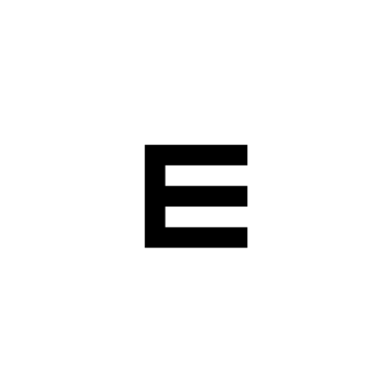
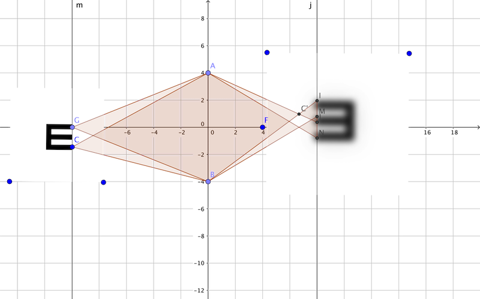

为什么对比敏感度的视标亮度是正弦变化的？(3)
Eigenfunction（本征函数/ 特征函数）
现在我们要把另一个函数作为参数输入到线性函数里。越来越抽象了，不过对于咱们眼科医生来说，有成像过程可以辅助理解。
我们说函数function不过是把输入->输出的过程，所以一张图片，也可以是个函数，图片是把位置->颜色，或者简单一点，位置->亮度，图片上每一个位置有一个像素，像素带有一个亮度值。
所以，如果我们把一个视标图片E，看成是函数g(x)，

那么对于一个透镜f(x)，把函数g(x)作为输入就是f(g(x))了，

所以把函数作为参数输入到函数里，可以得到新到函数。
对于线性不变系统，如果把函数作为参数输入，有一类特殊的输入函数会有这样的性质： f( g(x) ) = A g(x) 把这个函数g(x)送进f，经过变换的结果，只是相当于对g(x)乘了个系数，g(x)里面的内部结构都没变！
这类特殊的输入函数叫做该线性不变系统的Eigenfunction，可以翻译成“本征函数”或者“特征函数”。
Comments
Comments powered by Disqus